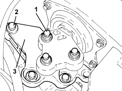
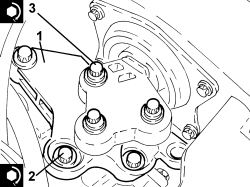
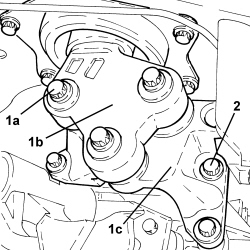

1008A42 POWER UNIT RIGID SUPPORT - GEARBOX SIDE - R.R.
- Path
- Procedures > 10 ENGINE > 1008 POWER UNIT SUPPORTS > 1008A POWER UNIT FASTENINGS > 1008A42 POWER UNIT RIGID SUPPORT - GEARBOX SIDE - R.R.
- Kind
- repair procedure (removal / refitting; the operation number is the code)
- Applies to
- engines: 1.8, 2.2, 1.9 JTD 16v, 2.4 JTD 20v; all production periods
- Interactive page
- https://sloeber94.github.io/elrnDB-fCrm/en/#/194000233
Applies to: engines: 2.2; all production periods
 Removing
Removing
 Refitting
RefittingOp. 5530B52 BATTERY SUPPORT/DRIP TRAY - R.R
Op. 1008B30 GEARBOX SIDE SUPPORT FLEXIBLE MOUNTING(S) - REPLACE
Applies to: engines: 2.2; all production periods
Refitting
RemovingOp. 1008B30 GEARBOX SIDE SUPPORT FLEXIBLE MOUNTING(S) - REPLACE
Applies to: engines: 1.9 JTD 16v; all production periods
Removing
RefittingOp. 5530B52 BATTERY SUPPORT/DRIP TRAY - R.R
- Position a hydraulic jack underneath the gearbox.
1. Undo the bolts fixing the gearbox side power unit flexible mounting to the rigid support.
- Lower the power unit as necessary.
2. Undo the bolts (2a) and remove the power unit gearbox side rigid support (2b).

Applies to: engines: 1.9 JTD 16v; all production periods
Refitting
Removing1. Place the power unit gearbox side rigid support (1a) in its housing and secure it tightening the bolts (1b) to the recommended torque.
Component | Fastening | dia | Value (daNm) | Validity |
|---|---|---|---|---|
Gearbox side power unit rigid support | Bolt | M10/12 | (gearbox side) 5.0 - 6.0 |
- Place the power unit back in its housing.
2. Tighten the bolts fixing the gearbox side power unit flexible mounting to the rigid support to the recommended torque.
Component | Fastening | dia | Value (daNm) | Validity |
|---|---|---|---|---|
Gearbox side support flexible mounting | Bolt | M10 | (support side) 5.0 - 6.0 |
- Remove the hydraulic jack under the engine crankcase sump.

Applies to: engines: 1.9 JTD 16v; all production periods
Applies to: engines: 2.2; all production periods; only with equipment: AUTOMATIC TRANSMISSION
Removing
RefittingOp. 5530B52 BATTERY SUPPORT/DRIP TRAY - R.R
- Position a hydraulic jack underneath the gearbox.
1. Undo the bolts fixing the gearbox side flexible mounting to the rigid support.
- Operate the hydraulic jack to lower the gearbox as required.
2. Undo the bolts fixing power unit gearbox side rigid support to the automatic gearbox.
3. Remove the gearbox side rigid power unit support.

Applies to: engines: 2.2; all production periods; only with equipment: AUTOMATIC TRANSMISSION
Refitting
Removing1. Refit the gearbox side rigid power unit support.
2. Tighten the bolts fixing the power unit gearbox side support to the automatic gearbox to the recommended torque.
Component | Fastening | dia | Value (daNm) | Validity |
|---|---|---|---|---|
Gearbox side power unit rigid support | Bolt | M10/12 | (gearbox side) 5.0 - 6.0 |
- Operate the hydraulic jack to lower the gearbox as required.
3. Tighten the bolts fixing the gearbox side support flexible mounting to the rigid support to the recommended torque.
Component | Fastening | dia | Value (daNm) | Validity |
|---|---|---|---|---|
Gearbox side support flexible mounting | Bolt | M10 | (support side) 5.0 - 6.0 |
- Remove the hydraulic jack from underneath the gearbox

Applies to: engines: 2.2; all production periods; only with equipment: AUTOMATIC TRANSMISSION
Applies to: engines: 2.4 JTD 20v; all production periods
Removing
RefittingOp. 5530B52 BATTERY SUPPORT/DRIP TRAY - R.R
Op. 7055B54 UNDER ENGINE PROTECTION/GUARD - R.R.
Op. 1008B30 GEARBOX SIDE SUPPORT FLEXIBLE MOUNTING(S) - REPLACE
Applies to: engines: 2.4 JTD 20v; all production periods
Refitting
RemovingOp. 1008B30 GEARBOX SIDE SUPPORT FLEXIBLE MOUNTING(S) - REPLACE
Op. 7055B54 UNDER ENGINE PROTECTION/GUARD - R.R.
Applies to: engines: 1.8; all production periods
Removing
RefittingOp. 5530B52 BATTERY SUPPORT/DRIP TRAY - R.R
- Position an arm lift underneath the gearbox.
1. Undo the bolts (1a) fixing the flexible mounting (1b) to the gearbox side rigid support (1c).
2. Undo the bolts fixing the gearbox side rigid support (1c) to the gearbox and remove it.

Applies to: engines: 1.8; all production periods
Refitting
Removing- Place the gearbox side rigid support in its housing and secure it to the gearbox tightening the bolts to the recommended torque.
Component | Fastening | dia | Value (daNm) | Validity |
|---|---|---|---|---|
Gearbox side power unit rigid support | Bolt | M10/12 | (gearbox side) 5.0 - 6.0 |
- Tighten the bolts fixing the flexible mounting to the gearbox side rigid support to the recommended torque.
Component | Fastening | dia | Value (daNm) | Validity |
|---|---|---|---|---|
Gearbox side support flexible mounting | Bolt | M10 | (support side) 5.0 - 6.0 |
- Remove the arm lift positioned underneath the gearbox.
Topics linked from this page (4)
- 1008B30 GEARBOX SIDE SUPPORT FLEXIBLE MOUNTING(S) - REPLACE
- 5530B10 BATTERY - R+R
- 5530B52 BATTERY SUPPORT/DRIP TRAY - R.R
- 7055B54 UNDER ENGINE PROTECTION/GUARD - R.R.